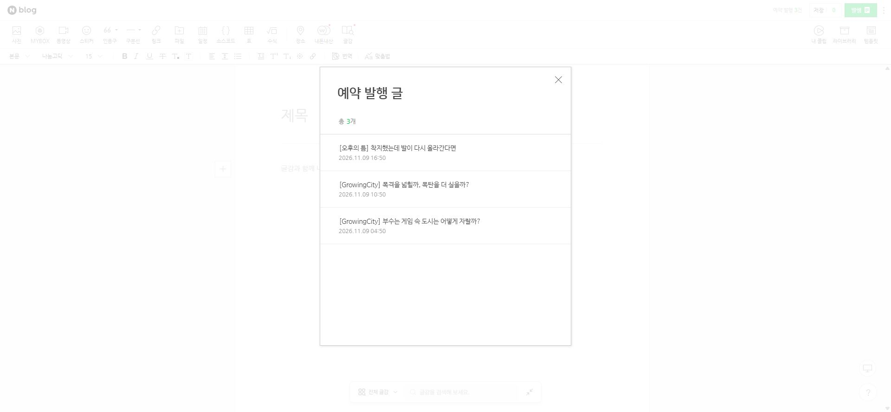

Tracefolio REPORTS & ISSUES
Tracefolio REPORTS & ISSUES매일 오전 10시·오후 6시 예약과 통일된 달력 UI 0.11.0
완료한국시간 매일 10시·18시 자동 예약으로 바꾸고 기존 네이버 예약 3건도 이동했습니다. 날짜 선택은 관리 박스와 같은 스타일의 달력·두 시간 버튼으로 통일했으며 실제 크롬에서 확인했습니다.
작업 결과
자동 예약 정책을 매일 한국시간 오전 10시와 오후 6시, 하루 두 시간대로 설정했습니다. 기존 예약은 11월 9일 10:00·18:00, 11월 10일 10:00으로 실제 네이버에서 변경했습니다. 로컬 원고의 접수번호·제목·본문·태그는 유지했습니다. 다음 빈 예약 순서는 11월 10일 18:00입니다.
변경 내용
적용 내용
- 6시간 간격 계산을 한국시간의 두 고정 시각으로 교체했습니다. 이미 점유된 예약 시각을 건너뛰고, 날짜·월·연도 경계와 최소 준비 시간을 반영합니다.
- 기본 datetime-local 입력 대신 공통 달력을 넣었습니다. 같은 색상·서체·모서리의 날짜 그리드와 오전 10시/오후 6시 버튼을 사용하고, 확인 전에는 값이 바뀌지 않습니다. Escape나 바깥 클릭으로 닫을 수 있습니다.
- 확장 기능 제목과 예약 상태를 한 행에 묶고, 발행 일정·적용 버튼·관리 버튼의 간격을 줄였습니다. 예약 취소가 멀리 떨어지지 않도록 같은 버튼 그룹으로 배치했습니다.
- 검색 키가 없는 현재 상태에서는 연결된 중앙 아카이브로 원고 보충을 이어갑니다. 이를 최신 뉴스 검색 결과로 표시하거나 경험을 만들어 쓰지 않습니다.
검증
실제 네이버 예약 목록 3건의 제목과 변경 시각을 대조했습니다. 접수번호는 224469589119·224469601387·224469605609이며 로컬 반영 후 본문·제목·태그 불변을 확인했습니다. 실제 설치 서버와 확장 파일은 0.11.0, 런타임 48파일 해시 일치, 원고 파일 해시 보존을 확인했습니다. 정책 enabled=true, times=[10:00,18:00], timezone=Asia/Seoul, minimumDailyPosts=2입니다. 전체 검사 67/67 통과, 건너뜀 0입니다. 초기 실행에서는 임시 폴더 rename EPERM이 발생해 실패로 보존했고 순차 실행으로 재검증했습니다. 파일 권한 오류의 원인은 단정하지 않았습니다. 날짜 경계·점유 슬롯·중복 제출·달력 확인 전 값 유지·두 시간 선택·기존 본문 보존을 검사했습니다. 실제 Chrome에서 기본 datetime 입력 0개, 공통 달력의 286×378.6px 팝업과 오전 10시/오후 6시 버튼, Escape 닫기를 확인했습니다. 원고 수정이나 일정 적용 버튼은 누르지 않았습니다. 설치본 159843519바이트, SHA256 6B9576EF996EB4F3C877B0296B9EE102529C0994B020D3FFFFE629FBD0E8CECC. 소스 커밋 7bbf7d32c1ec3ab3a526a837e0834dd354018d02.

남은 사항
등록한 세 글은 네이버가 예약 시각에 처리합니다. 그 시각이 아직 오지 않아 실제 공개 본문 확인과 게시 후 자동 보충은 미실행입니다. 이후 새 예약 등록과 보충에는 앱·크롬·로그인이 필요합니다. 원고·자료가 부족한 상황까지 하루 두 건의 성공을 보장한 것으로 보고하지 않습니다. 검색 API 키는 아직 미등록이며 현재 보충 자료는 중앙 아카이브입니다.
대화 요약(개별 발언 시각 미기록): 사용자 “오전 10시, 오후 6시 하루에 최소 두번 발행” 요청 → AI 기존 예약도 조정하는 범위와 1015분 제시 → 사용자 달력 디자인과 요소 간격의 통일감 정정 → AI 전체 1520분으로 수정 → 실제 네이버 3건 시간 변경·새 정책과 UI 설치 → 사용자 “두 곳 새로고침 완료” → Chrome 달력 열기·닫기 검증. 네이버 본문은 변경하지 않았습니다.
교훈 검토: 매일 두 시간대 및 공통 달력 선호를 기존 프로젝트 지침에 통합했습니다. 전역은 기존 범위·실행 검증 원칙과 중복돼 변경하지 않았습니다. OS 컴퓨터 유즈 없이 Chrome 연결로만 처리했고, 예약 목록은 결과 확인용으로 유지했습니다. 임시 달력은 닫았으며 원래 사용자 탭은 보존했습니다. 컴파일은 정상 종료했습니다. 미게시 본문 포함 전후 UI 캡처는 앞선 자동 승인 검토의 공개 차단을 존중해 로컬/채팅에만 보관합니다.
작업 시간
- 제안 시간: 최초 10
15분. 추가 디자인 요청을 포함해 전체 1520분으로 조정했습니다. - 실제로 완료된 시간: 시작2026-11-09 01:15:07 KST. 실제예약3건변경및0.11.0적용01:24:23 KST, 실제달력확인01:26경. 공개보고서확인은최종채팅에기록.
- XERJ: 미사용 — 연결 도구 미제공. rg·현재 소스·실제 네이버 예약 목록·Chrome UI·설치 파일 해시로 확인했습니다.